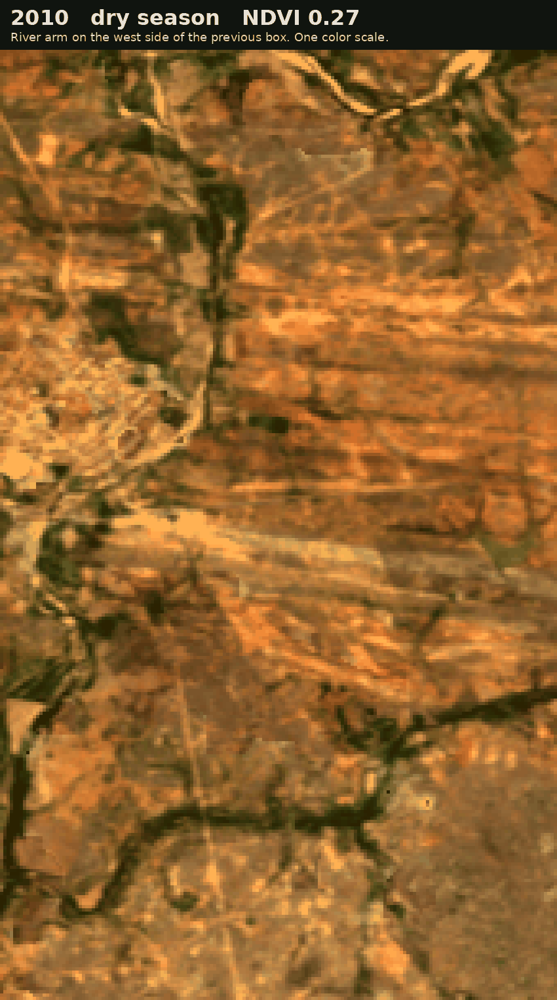

Floresta, PE — river arm
The same 13 km box as before, cropped to the arm that runs down the west side, beside the town. Dry season, 30 m, 2010 to 2024, with one color scale. Dark green is vegetation along the arm.
In 2012 the NDVI of this stretch is 0.20, and in 2015–2017 it stays near 0.21. The green corridor is thin. In 2022 it rises to 0.31 and in 2024 it is 0.30, with a much wider, darker arm. The dry years show a drop, and the years after 2020 show recovery.
